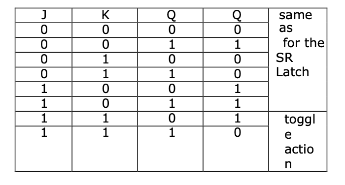
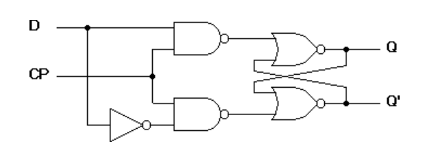

TITLE : FLIP FLOP CONVERSIONS
OBJECTIVE :
To design and realize flip flop conversion
APPARATUS :
Digital-Board, IC 7476(Dual JK), 7408 (AND-gate), 7432 (OR-gate), D Flip flop
THEORY :
JK Flip-Flop:
The JK Flip-Flop is basically a Gated SR Flip-Flop with the addition of clock
input circuitry that prevents the il egal or invalid output that can occur when
both input S equal’s logic level "1" and input R equals logic level "1". The
symbol for a JK Flip-flop is similar to that of an SR Bi stable as seen in the
previous tutorial except for the addition of a clock input.

The Truth Table for the JK Function
D Flip-Flop:
It has only one input, D-input or data input. From the truth table it is clear that output Qn+1 at the end of clock pulse equals the input Dn before the clock pulse. It means input appears at the output at the end of the clock pulse. The output is delayed and hence the name is D Flip- flop.
Pin Diagram

PROCEDURE:
Make connections as per the logic circuit for D flip flop to SR Flip flop and verify the truth table.
Conversion of D Flip Flop to SR Flip Flop
D is the actual input of the flip flop and S and R are the external inputs. Eight possible combinations are achieved from the external inputs S, R and Qp. But, since the combination of S=1 and R=1 are invalid, the values of Qp+1 and D are considered as “don’t cares”. The logic diagram showing the conversion from D to SR, and the K-map for D in terms of S, R and Qp are shown below.

JK Flip Flop to T Flip Flop
J and K are the actual inputs of the flip flop and T is taken as the external input for conversion. Four combinations are produced with T and Qp. J and K are expressed in terms of T and Qp. The conversion table, K- maps, and the logic diagram are given below.